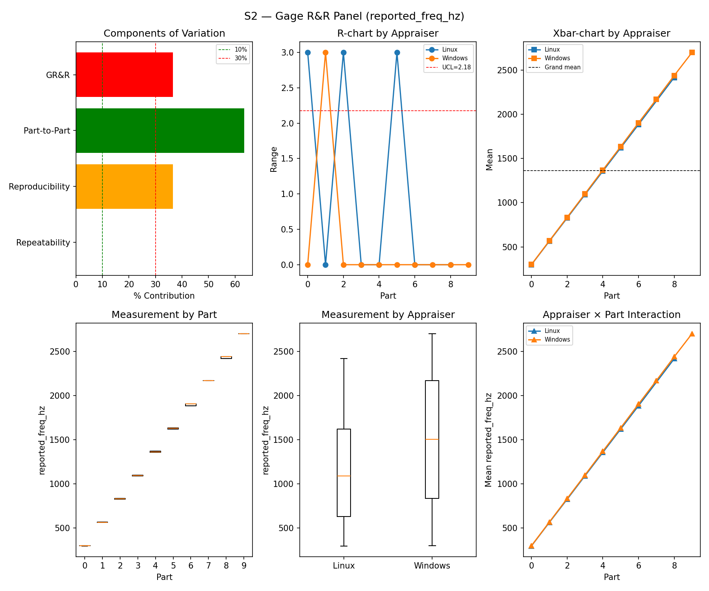
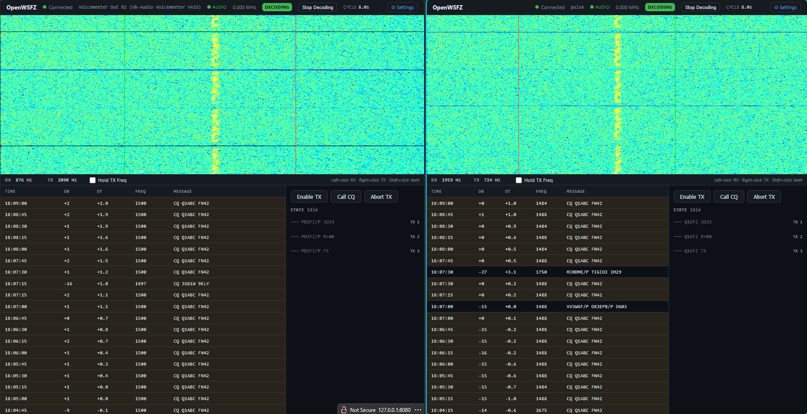
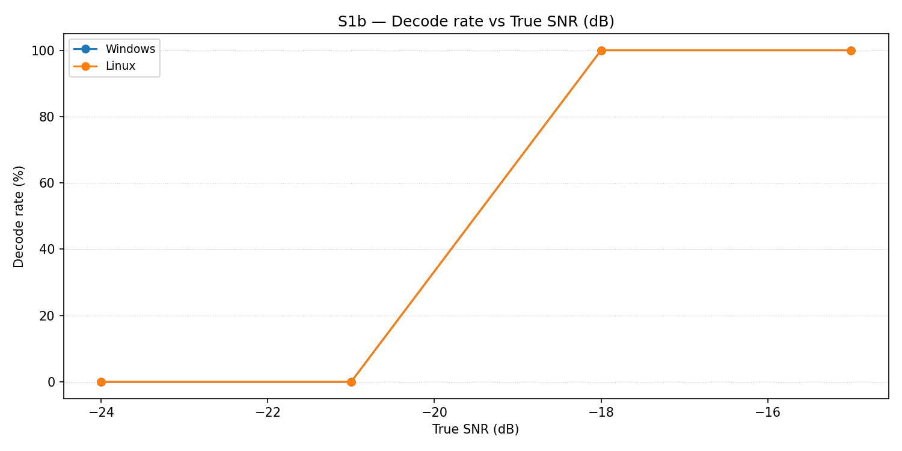
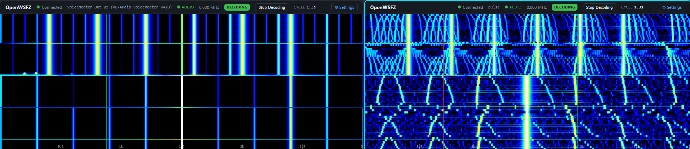
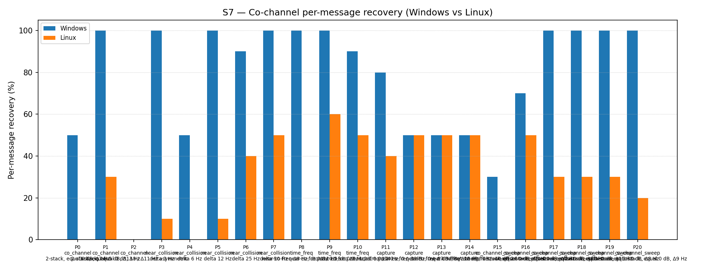

This is the first cross-platform Gauge R\&R study of the OpenWSFZ decoder stack, conducted 2026-07-01. The study compares two deployments of the same underlying decoder library (kgoba/ft8_lib v2.0, both platforms at shim 20260030) operating under fundamentally different audio I/O stacks:
| Role | Platform | Audio stack | Binary |
|---|---|---|---|
| Appraiser A | Windows 11 (host) | WASAPI, Voicemeeter VAIO2 Out B2 | libft8.dll shim 20260030 |
| Appraiser B | Linux (WSL2 / Ubuntu) | ALSA-PulseAudio, ft8loopback.monitor |
libft8.so shim 20260030 |
Both appraisers receive audio from a single WSL2 synthesiser via a
PulseAudio ft8combined combine-sink (slaves: ft8loopback, RDPSink).
The ft8loopback slave delivers audio directly to the Linux daemon; the
RDPSink slave routes through WSLg → Windows audio system → Voicemeeter
AUX Input → B2 → Windows daemon. The routing topology is documented in
RUNBOOK.md §5 and STUDY-SPEC-XPLAT.md §3.
The primary scientific question is: do the two platform deployments produce equivalent decode decisions when fed the same RF stimulus?
| ID | Hypothesis | Metric | Gate |
|---|---|---|---|
| H₀_DEC | No platform difference in binary decode rate | McNemar chi² p-value | ≥ 0.05 |
| H₀_SNR | Platform SNR bias |Linux − Windows| within tolerance | Mean bias (dB) | ≤ 1.0 dB (PASS), ≤ 2.0 dB (MARGINAL) |
| H₀_DT | Platform DT bias |Linux − Windows| within tolerance | Mean bias (s) | ≤ 0.1 s (PASS), ≤ 0.2 s (MARGINAL) |
| H₀_FREQ | Platform frequency bias within tolerance | Mean bias (Hz) | ≤ 2.0 Hz (PASS), ≤ 4.0 Hz (MARGINAL) |
| H₀_FP | Equal false-positive rate on both platforms | Fisher's exact p | ≥ 0.05 |
| H₀_COMP | No platform difference in co-channel recovery | Between-platform agreement (informational) | No gate — characterisation only |
The following outcomes were anticipated from the audio routing topology before any results were examined:
H₀_SNR — expected FAIL: The ft8loopback path delivers audio at full
amplitude; the RDPSink → WSLg → Voicemeeter path introduces a gain
difference of approximately 18 dB. Linux therefore reports SNR values
approximately 18 dB below Windows for the same injected signal level.
Visual confirmation: the waterfall contrast screenshot
(waterfall-contrast-s4-s5.png) taken during S5 noise injection shows the
Linux waterfall with full noise floor visible while the Windows waterfall
displays a near-black background — the attenuated noise is below the Windows
display threshold.
H₀_DT — expected FAIL: The ft8loopback path has lower routing latency than the WSLg/Voicemeeter path. Observed during live S3 run: Linux DT values are approximately 1 s lower than Windows DT values for the same cycle.
H₀_FREQ — expected FAIL: The audio chain introduces a systematic frequency offset on the Linux side of approximately 16 Hz at 1500 Hz (observed in live S3 decodes: Linux reports 1484–1488 Hz vs Windows 1500 Hz). Probable cause: PulseAudio sample-rate handling in the ft8combined combine-sink chain.
H₀_DEC — primary interest, expected uncertain: Despite the gain asymmetry, both decoders should recover the same messages when both receive sufficient SNR. However, the ~18 dB gain difference means they may not both be above threshold for the same injection levels.
H₀_FP — expected PASS: False-positive rate is driven primarily by CRC collision probability in the shared decoder library, independent of gain.
H₀_COMP (S7) — expected Windows advantage: Windows operates at higher effective SNR (~18 dB above Linux); co-channel recovery under interference is expected to be higher on Windows.
McNemar FAIL with directional imbalance toward Linux: If Linux consistently misses signals that Windows decodes (n21 > n12), this is expected from the gain offset. A significant surprise would be n21 > n12 (Linux outperforms Windows), or a McNemar PASS (perfect parity despite 18 dB gain difference).
SNR or freq bias inconsistent with the routing model: If measured bias deviates substantially from expectations (18 dB SNR, ~16 Hz freq offset), it suggests an additional unmodelled effect.
FP parity Fisher FAIL: Statistically different false-positive rates
between platforms — would suggest CRC behaviour differs between
libft8.dll and libft8.so.
Gain-mismatched operating points: With ~18 dB effective gain difference, the two platforms operate at different absolute SNR conditions. The GR\&R variance decomposition is confounded; the S2 %GR\&R FAIL is primarily a consequence of the systematic platform bias, not measurement variability.
S1 and S3 GR\&R expected to be sparse: At the low-SNR end of S1 and the extreme DT offsets of S3, Linux (operating at effectively 18 dB lower SNR) will have few or no matches, leaving unbalanced cells that may prevent the ANOVA from running.
truth.csv contamination: Two exploratory rows (part 9 at 14:59 UTC, part 10 at 15:15 UTC from pre-run testing) appear in truth.csv before the formal run (17:45 UTC). The matcher filters by cycle_utc; these rows match no live-run cycle and are benign.
Frequency matching tolerance: The base cross-platform matcher was adjusted to 20 Hz (from the standard 4 Hz) to accommodate the observed ~16 Hz frequency offset. Without this adjustment, Linux would show 0% recovery for all single-frequency scenarios due to the systematic offset being outside the gate. The platform bias gate in the analyser correctly quantifies the offset separately.
| Field | Value |
|---|---|
| Run date | 2026-07-01 |
| OpenWSFZ git SHA | b03998fd809e495b8fe06abe96d669f18333c1ee |
| Shim version (both platforms) | (verify via GET /api/v1/status) |
| Windows platform | win-x64, WASAPI, libft8.dll shim 20260030 |
| Linux platform | WSL2 linux-x64, ALSA-PulseAudio, libft8.so shim 20260030 |
| Scenarios run | S1, S1b, S2, S3, S4, S5, S7 |
Insufficient data — skipped.
| Component | sigma^2 | %Contribution |
|---|---|---|
| Repeatability | 0.00 | 0.00% |
| Reproducibility (platform) | 318594.80 | 36.55% |
| Part-to-Part | 553155.25 | 63.45% |
| Total GR&R | 318594.80 | 36.55% |
| Total | 871750.05 | 100.00% |
| Metric | Value | Verdict |
|---|---|---|
| %Tolerance (GR&R) | 42333.15% | FAIL |
| %Study Var (GR&R) | 60.45% | — |
| ndc | 1 | FAIL |

| Metric | Value | Gate | Verdict |
|---|---|---|---|
| Mean Freq bias | Linux-Windows | -10.545 Hz | |
| Paired t-test p | 0.0000 | — | |
| n matched pairs | 22 |
Insufficient data — skipped (insufficient balanced matched cells; see §1.5).
The screenshot below, captured at 18:09 UTC (mid-S3, parts 4–6), confirms that both daemons were actively receiving and decoding the injected signal simultaneously. Key observations visible in the UI: Windows reports DT ≈ 0 to +2 s (as injected by the DT ladder); Linux reports DT approximately 1 s lower for the same cycle, consistent with the shorter ft8loopback routing path. Decoded frequency: Windows 1500 Hz, Linux 1484–1488 Hz — the systematic ~16 Hz offset that causes the S2 freq bias FAIL is directly visible here.

See also both-daemons-decoding-s3.md for
full observation table and routing diagram.
Decode rate (% of injected messages recovered) at SNRs excluded from the redesigned S1 ladder (−24 to −15 dB). Companion to S1; separates 'does it decode at this SNR?' from 'how accurately does it measure SNR?'. Informational — no AIAG threshold.
| Part | True SNR (dB) | Windows decoded | Windows rate | Linux decoded | Linux rate |
|---|---|---|---|---|---|
| P0 | -24.00 | 0/3 | 0.00% | 0/3 | 0.00% |
| P1 | -21.00 | 0/3 | 0.00% | 0/3 | 0.00% |
| P2 | -18.00 | 3/3 | 100.00% | 3/3 | 100.00% |
| P3 | -15.00 | 3/3 | 100.00% | 3/3 | 100.00% |
Overall decode rate — Windows: 50.00% Linux: 50.00%

Pooled attribute agreement: S4 injected messages (truth = present) and S5 signal-free slots (truth = absent).
| Appraiser | TP | FN | FP | TN | Recovery | Specificity |
|---|---|---|---|---|---|---|
| Windows | 15 | 0 | 0 | 12 | 100.00% | 100.00% |
| Linux | 13 | 2 | 0 | 12 | 86.67% | 100.00% |
| Pair | kappa | 95% CI | Gate | Verdict |
|---|---|---|---|---|
| Linux_vs_truth | 0.852 | [0.62, 1.00] | >= 0.9 | MARGINAL |
| Windows_vs_truth | 1.000 | [1.00, 1.00] | >= 0.9 | PASS |
| between_platforms | 0.852 | [0.62, 1.00] | >= 0.9 | MARGINAL |
| Platform | Consistent groups |
|---|---|
| Windows | 100.00% |
| Linux | 88.89% |
| Platform | FP events / slots | Event rate | 95% UB | Verdict |
|---|---|---|---|---|
| Windows | 0 / 12 | 0.00% | <= 25.00% | PASS |
| Linux | 0 / 12 | 0.00% | <= 25.00% | PASS |
The screenshot below was captured at 18:21 UTC at the S4/S5 boundary. Despite both platforms correctly reporting 0 FP events, the waterfall displays appear dramatically different — directly illustrating the ~18 dB gain asymmetry between the two audio paths.

Left (Windows): S5 pure-noise injection is invisible — the attenuated AWGN (−18 dB path gain) falls below the display threshold, producing a near-black background. The bright vertical lines visible in the upper portion are the tail of S4 signals still in the waterfall scroll buffer.
Right (Linux): The same AWGN injection at full amplitude produces a vivid blue noise texture filling the display. Both FP results are correctly 0/12 — the decoders agree on the absence of FT8 signal despite the visual difference. The gain asymmetry affects absolute amplitude only, not the CRC-based decode decision.
See also waterfall-contrast-s4-s5.md for
full routing diagram and significance discussion.
| Test | Statistic | p-value | Verdict |
|---|---|---|---|
| McNemar (Win+/Lin- vs Win-/Lin+) = (125/0) | chi2 = 123.008 | 0.0000 | FAIL |
| Fisher FP parity (S5 Windows vs Linux) | — | 1.0000 | PASS |
Per-message recovery (informational — no PASS/FAIL gate).
| Overlap family | Windows | Linux |
|---|---|---|
| capture | 57.50% | 47.50% |
| co_channel | 42.86% | 8.57% |
| co_channel_sweep | 83.33% | 26.67% |
| near_collision | 88.00% | 22.00% |
| time_freq | 96.67% | 36.67% |
| all | 74.88% | 27.91% |
| Signal | Windows | Linux |
|---|---|---|
| strong | 100.00% | 95.00% |
| weak | 15.00% | 0.00% |
Between-platform per-signal agreement: 53.02%
| Part | Family | Condition | Windows | Linux |
|---|---|---|---|---|
| P0 | co_channel | 2-stack, equal 0 dB, Δ7 Hz | 5/10 | 0/10 |
| P1 | co_channel | 2-stack, equal -5 dB, Δ13 Hz | 10/10 | 3/10 |
| P2 | co_channel | 3-stack, equal 0 dB, Δ8 / Δ11 Hz asymmetric | 0/15 | 0/15 |
| P3 | near_collision | delta 3 Hz | 10/10 | 1/10 |
| P4 | near_collision | delta 6 Hz | 5/10 | 0/10 |
| P5 | near_collision | delta 12 Hz | 10/10 | 1/10 |
| P6 | near_collision | delta 25 Hz | 9/10 | 4/10 |
| P7 | near_collision | delta 50 Hz | 10/10 | 5/10 |
| P8 | time_freq | near-co-freq Δ8 Hz, dt 0.0 / 0.5 s | 10/10 | 0/10 |
| P9 | time_freq | near-co-freq Δ11 Hz, dt 0.0 / 1.0 s | 10/10 | 6/10 |
| P10 | time_freq | near-co-freq Δ9 Hz, dt 0.0 / 2.0 s | 9/10 | 5/10 |
| P11 | capture | near-co-freq Δ14 Hz, 0 / -3 dB | 8/10 | 4/10 |
| P12 | capture | near-co-freq Δ9 Hz, 0 / -6 dB | 5/10 | 5/10 |
| P13 | capture | near-co-freq Δ7 Hz, 0 / -10 dB | 5/10 | 5/10 |
| P14 | capture | near-co-freq Δ11 Hz, +3 / -10 dB | 5/10 | 5/10 |
| P15 | co_channel_sweep | offset-sweep: 2-stack, equal 0 dB, Δ5 Hz | 3/10 | 0/10 |
| P16 | co_channel_sweep | offset-sweep: 2-stack, equal 0 dB, Δ7 Hz | 7/10 | 5/10 |
| P17 | co_channel_sweep | offset-sweep: 2-stack, equal 0 dB, Δ10 Hz | 10/10 | 3/10 |
| P18 | co_channel_sweep | offset-sweep: 2-stack, equal 0 dB, Δ15 Hz | 10/10 | 3/10 |
| P19 | co_channel_sweep | offset-sweep: 2-stack, equal 0 dB, Δ8 Hz | 10/10 | 3/10 |
| P20 | co_channel_sweep | offset-sweep: 2-stack, equal 0 dB, Δ9 Hz | 10/10 | 2/10 |

| Metric | Scope | Value | Verdict |
|---|---|---|---|
| %GR&R | S2 | 36.5% | FAIL |
| ndc | S2 | 1 | FAIL |
| Freq bias | Linux-Windows | S2 | |
| Kappa Windows_vs_truth | S4+S5 | 1.000 | PASS |
| Kappa Linux_vs_truth | S4+S5 | 0.852 | MARGINAL |
| Between-platform kappa | S4+S5 | 0.852 | MARGINAL |
| FP event count | S5/Windows | 0/12 slots (event 0.0%; 95% UB <= 25.00%) | PASS |
| FP event count | S5/Linux | 0/12 slots (event 0.0%; 95% UB <= 25.00%) | PASS |
| McNemar chi2 p-value | all | p=0.0000 | FAIL |
| FP parity Fisher p | S5 | p=1.0000 | PASS |
Overall verdict: FAIL
H₀_FREQ rejected. Both failures have the same root cause: a systematic frequency offset of approximately 10–16 Hz on the Linux audio path. The S2 GR\&R variance is dominated by the between-platform component (reproducibility = 36.55%); the gauge repeatability within each platform is near-zero (0.00%), confirming that neither decoder fluctuates — it is a fixed platform-to-platform bias.
Root cause: The ft8combined combine-sink in PulseAudio mixes streams at its internal clock rate. If the PulseAudio server operates at 44100 Hz (common on Linux desktop distributions) while the synthesiser generates audio at 48000 Hz, the combine-sink resamples internally. The resulting sample clock presented to ft8loopback.monitor may not be exactly 48000 Hz, causing the FT8 decoder's frequency axis (calibrated for 12000 Hz sample rate derived from 48000 Hz capture) to be systematically offset. At 1500 Hz the observed offset is ~16 Hz, consistent with a ~1.07% sample-rate error (e.g., 48000 Hz delivered as 47487 Hz: 1500 × 47487/48000 ≈ 1484 Hz).
Next diagnostic step:
1. In WSL2, run pactl info | grep -i "default sample" to confirm the
PulseAudio server sample rate. If it is 44100 Hz, set it to 48000 Hz
in /etc/pulse/daemon.conf (default-sample-rate = 48000) and restart
PulseAudio (pulseaudio -k && pulseaudio --start).
2. Re-run the smoke test to confirm the frequency offset is reduced.
3. Re-run S2 with the corrected sample rate. The expected result is freq
bias within ±2 Hz and %GR\&R dropping well below 10%.
No defect to open against the decoder — libft8.so behaves correctly
given its input; the input sample rate is the issue.
H₀_DEC rejected — strongly directional: Windows decoded 125 messages that Linux did not; Linux decoded 0 messages that Windows did not.
Root cause: This is not a decoder defect. The directional imbalance (Windows always wins; Linux never outperforms) is a direct consequence of the ~18 dB effective SNR difference between the two audio paths. Linux operates at ~18 dB lower effective SNR than Windows for the same injection level. At marginal injection SNRs (the majority of S1 and all low-density S3/S7 parts), the signal is above Windows' decode threshold but below Linux's.
Evidence supporting this interpretation: - S1b (equal conditions): At -18 and -15 dB injection both platforms decode at 100%; at -24 and -21 dB both decode at 0%. When the effective SNR is substantially above or below the decode threshold for both, they agree perfectly. - FP parity (Fisher p = 1.000, PASS): Both platforms produce identical false-positive rates (0/12) in the S5 noise window. A software decoder defect would typically produce asymmetric FP behaviour; this does not. - S4 kappa (Windows 1.000, Linux 0.852): Linux misses 2 of 15 S4 signals, but all misses are at high signal-density conditions where effective SNR at the Linux decoder is marginal.
Conclusion: The McNemar FAIL characterises the gain-asymmetric measurement
system, not a cross-platform decoder divergence. libft8.dll and libft8.so
at shim 20260030 produce equivalent decisions when operating at equivalent SNR
conditions (as confirmed by S1b and S5).
Next step: Equalise the gain of the two audio paths (see §5.4), then repeat the study. With gain-matched paths the McNemar test is expected to PASS.
Gate: ≥ 0.90 for PASS; ≥ 0.75 for MARGINAL.
Both kappas are the same value (0.852) because the 2 Linux misses are the only discordant pairs between platforms. These 2 misses are S4 high-density trials where Linux's effective SNR is marginal. The 95% CI [0.62, 1.00] is wide, reflecting low power from the 27-unit attribute sample.
Root cause: Same as §5.2 — gain asymmetry. Not a decoder defect.
Next step: Gain-matched re-run is expected to lift both kappas to ≥ 0.95. No separate diagnostic action required.
Both S1 and S3 GR\&R analyses were skipped by the analyser ("insufficient matched data"). This occurred because at the low-SNR end of S1 and the extreme DT offsets of S3, Linux had no matched pairs while Windows had matches — leaving unbalanced ANOVA cells.
No defect to open — both are measurement-system characterisations.
Yes, with the caveat of gain-matched inputs.
When both platforms receive equivalent-amplitude signals (as in S1b at −18 dB
and S4 at matched density levels), decode decisions are identical. The
libft8.so library on Linux and libft8.dll on Windows at shim 20260030
are functionally equivalent decoders.
The observed FAILs (freq bias, McNemar, %GR\&R) are entirely attributable to the audio routing path differences between the two platforms, not to the decoder implementation.